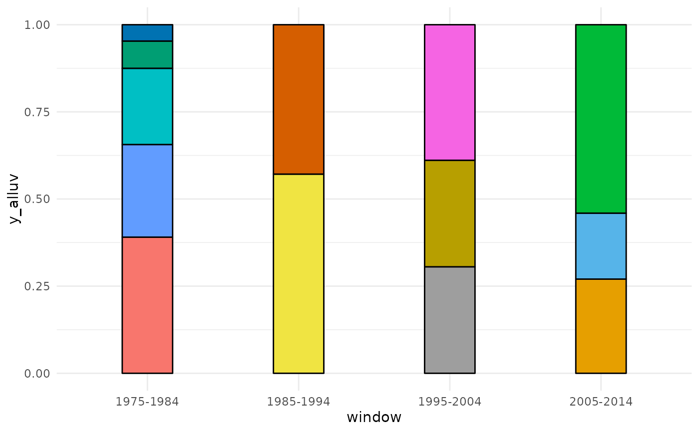

![[Experimental]](figures/lifecycle-experimental.svg)
plot_alluvial() draws the table created by networks_to_alluv() with
ggalluvial: one column per time window, one block per dynamic cluster,
with a height proportional to its share of the window, and flows that
follow the nodes from one window to the next. It can colour the clusters
(color_alluvial()), reorder them to limit crossings
(minimize_crossing_alluvial()) and position their labels
(prepare_label_alluvial()) on the way.
Usage
plot_alluvial(
alluv_dt,
cluster_id,
node_id,
window_column = "window",
color_column = "color",
color_alluvial = FALSE,
color = NULL,
minimize_crossing = FALSE,
prepare_label = FALSE,
cluster_label_column = "cluster_label",
min_share_cluster = NULL,
min_windows_cluster = NULL,
print_plot_code = FALSE
)Arguments
- alluv_dt
A data frame created with
networks_to_alluv(), or directly the list oftbl_graphs with dynamic clusters (seemerge_dynamic_clusters()), which is then converted withnetworks_to_alluv()(color_columnandcluster_label_columnare the columns kept).- cluster_id
Character scalar, the column with the dynamic clusters (e.g.
"dynamic_cluster_leiden").- node_id
Character scalar, the column with the node identifiers.
- window_column
Character scalar, the column with the time windows (
"window"by default).- color_column
Character scalar, the column with the colours of the clusters (
"color"by default). If absent orNULL,ggplot2chooses the colours.- color_alluvial
Logical. If
TRUE, runscolor_alluvial()first.- color
With
color_alluvial = TRUE, the colours passed tocolor_alluvial().- minimize_crossing
Logical. If
TRUE, runsminimize_crossing_alluvial()first. Clusters are also reordered whenalluv_dtalready has aminimize_crossing_ordercolumn.- prepare_label
Logical. If
TRUE, runsprepare_label_alluvial()first, which adds alabel_xcolumn with one label per cluster.- cluster_label_column
Character scalar, the column with the labels used by
prepare_label_alluvial()("cluster_label"by default).Optional numbers to keep the main clusters only: the clusters whose largest share of a window (
share_cluster_max, in per cent) is at leastmin_share_cluster, and which exist in at leastmin_windows_clusterwindows (length_cluster).NULL(default) keeps all the clusters.- print_plot_code
Logical. If
TRUE, prints theggplot2code of the plot.
Details
Labels are drawn with ggrepel, which must be installed, when alluv_dt
has a label_x column. Small clusters clutter alluvials: filtering the
table on share_cluster_max or length_cluster (see
networks_to_alluv()) before plotting keeps the main ones.
The alluvial method was initiated by Alexandre Truc.
Examples
# \donttest{
networks <- build_dynamic_networks(
nodes = subset(Nodes_stagflation, source_type == "Stagflation"),
directed_edges = Ref_stagflation,
source_id = "source_id",
target_id = "target_id",
time_variable = "source_year",
time_window = 10,
method = "similarity",
edges_threshold = 1,
verbose = FALSE
)
#> Warning: The last window is shorter than the others.
#> ℹ The data end in "2013", but the last window ends in "2014".
networks <- add_clusters(
networks,
clustering_method = "leiden",
objective_function = "modularity",
seed = 123,
verbose = FALSE
)
networks <- merge_dynamic_clusters(
networks,
cluster_id = "cluster_leiden",
node_id = "source_id",
method = "majority", threshold_similarity = 0.51,
similarity_type = "partial"
)
#> ℹ Linking clusters across windows with the "majority" rule: a cluster inherits
#> the identifier of a past cluster when more than 0.51 of the nodes of each go
#> to / come from the other (double majority). The comparison counts the nodes
#> present in both windows only (`similarity_type` = "partial").
#> Warning: 3 pairs of consecutive windows share no node: their clusters cannot be matched.
#> ℹ Clusters are matched through the nodes they share. In a network of documents
#> (coupling), each node has one date: the windows must overlap (`window_step`
#> smaller than `time_window` in `build_dynamic_networks()`). If windows already
#> overlap, the nodes may have changed completely, or the threshold may leave a
#> window without edges.
alluv_dt <- networks_to_alluv(
networks,
cluster_id = "dynamic_cluster_leiden",
node_id = "source_id"
)
#> ℹ No color column in the graphs: no colour kept (see `color_alluvial()`).
#> ℹ No cluster_label column in the graphs: no label kept (see `name_clusters()`).
if (requireNamespace("ggalluvial", quietly = TRUE)) {
plot_alluvial(
alluv_dt,
cluster_id = "dynamic_cluster_leiden",
node_id = "source_id",
color_alluvial = TRUE,
minimize_crossing = TRUE
)
}
#> Warning: 15 categories but 14 default colours: colours are recycled.
#> ℹ Give a palette in `color` (e.g. `scico::scico(15, palette = "batlow")`).
#> Warning: no non-missing arguments to max; returning -Inf

# }